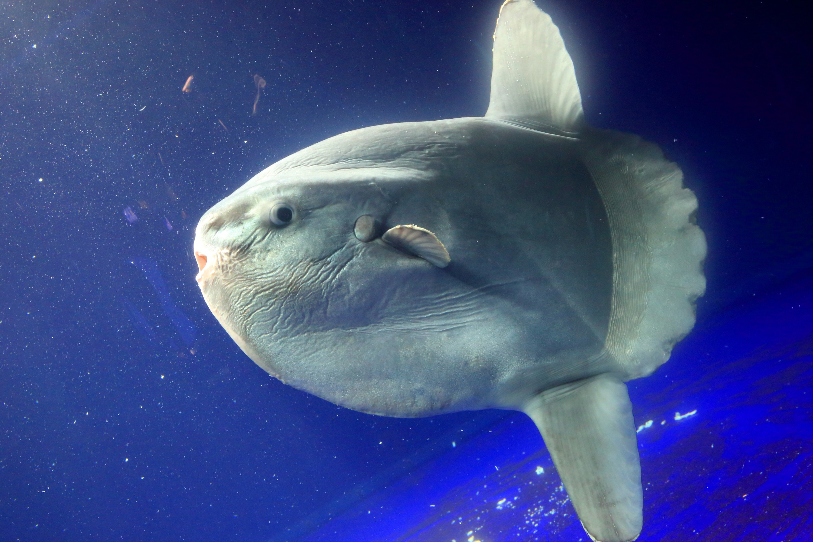
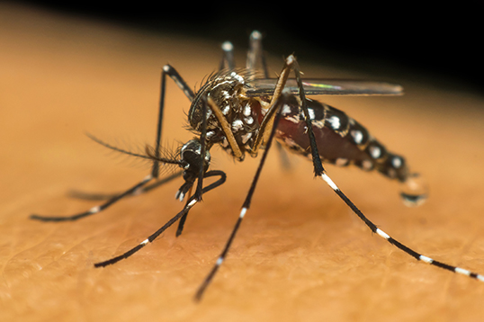

Peixe_Lua/Mola_mola
O peixe-lua, imenso e de formato peculiar, é um nadador lento que impressiona pelo tamanho, hábitos tranquilos e presença majestosa nos oceanos tropicais e temperados.

Mosquito
O mosquito é um inseto pequeno e ágil, famoso pelo zumbido, hábito de sugar sangue, reprodução em água parada e risco sanitário relevante para humanos.
 Cachorro_Pug
Cachorro_Pug
O pug é um cão pequeno, carismático e brincalhão, famoso pelo focinho achatado, olhos grandes, personalidade afetuosa e companhia leal em qualquer ambiente, muito doce.